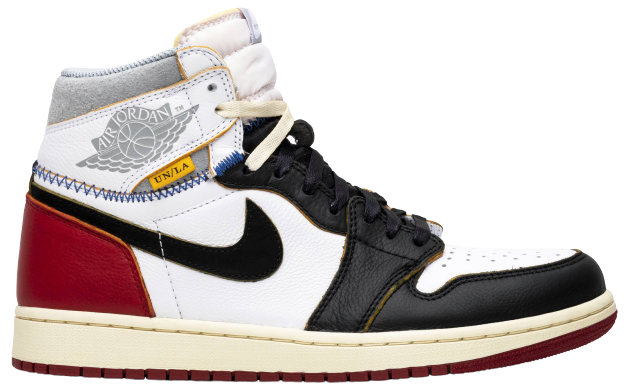

Aleali May x Wmns Air Jordan 6 Retro
$425.00
The Aleali May x Wmns Air Jordan 6 Retro marks the third collaboration with the international fashion stylist. Unveiled March 2019, this once-exclusive 'Millennial Pink' women’s sneaker tells the story of the influencer’s career journey.

Air Jordan 3 Retro 'Oregon Pit Crew'
$4,000.00
Nike released a colorway of the classic Air Jordan 3 silhouette in celebration of the University of Oregon student cheer section known as the Pit Crew. The Air Jordan 3 Retro 'Oregon Pit Crew' boasts an Oregon “O” logo on the tongue, and a duck foot motif on the heel.

Air Jordan 7 Retro Premio 'Bin23'
$745.00
The ‘Bin23’ colorway of the Air Jordan 7 is based on one of the original drawings Tinker Hatfield created when designing the shoe. The sketch shows the black and white heel detail present on this retro. Limited to only 2,059 pairs upon release in 2010, each shoe is individually numbered.

Union x Air Jordan 1 Retro High 'Black Toe'
$1,145.00
The Union x Air Jordan 1 Retro High 'Black Toe' sees the venerable Los Angeles retailer take inspiration from thrifting and DIY culture to create a new take on the sneaker that started it all. In addition to a pre-yellowed midsole for a vintage aesthetic.

Travis Scott x Air Jordan 4 Retro 'Cactus Jack'
$650.00
Music artist Travis Scott hails from Houston, where the Oilers used to take the field in red, white and blue uniforms. The Travis Scott x Air Jordan 4 Retro 'Cactus Jack' colorway pays tribute to the city’s bygone football team with Cactus Jack branding appears on the left heel in Varsity Red.

Air Yeezy 2 NRG 'Pure Platinum'
$4,650.00
The Air Yeezy 2 NRG 'Pure Platinum' launched in June 2012 featuring a subdued colorway that blends varying shades of grey on the upper and a contrasting pop of bright red on the collar lining. The unique design allows it to straddle the line between fashion and sport.

Yeezy Boost 350 V2 'Beluga'
$690.00
Unveiled at the Yeezy Season 3 presentation at Madison Square Garden, the Yeezy Boost 350 V2 ‘Beluga’ dropped on September 24, 2016. The evolved Yeezy Boost 350 V2 silhouette features a two-tone grey Primeknit and a solar red stripe with SPLY-350 branding on the lateral side.

Yeezy Boost 700 'Wave Runner'
$400.00
This inaugural colorway of Kanye West’s Yeezy Wave Runner 700 launched in November 2017, following a public debut earlier in the year as part of the Yeezy Season 5 runway show. The sneaker’s retro-inspired lines worked in tandem with a chunky silhouette reminiscent of an earlier era.

Todd Snyder x 998 'Color Spectrum'
$240.00
The made-in-USA 998 execution features an eye-catching color-blocked upper with hits of red, green, yellow, blue and black. Snyder himself described the collaboration by saying “As a lifelong fan of New Balance, I loved being able to take the iconic 998 shoe...”

Aimé Leon Dore x 827 'White'
$200.00
Launching as part of a capsule collection with the NYC streetwear brand, the Aimé Leon Dore x 827 ‘White’ makes use of a retro New Balance runner originally released in 1999. The upper features a white mesh base with tonal synthetic suede overlays, and two-tone webbing.

Air Fear of God 1 'The Question'
$820.00
Launching in February 2020, the Air Fear of God 1 'The Question' continues Jerry Lorenzo’s partnership with Nike. The designer’s stylish take on the performance basketball shoe is treated to neutral color scheme, highlighted by a black textile upper with a contrasting white toe box.

Air Fear Of God 1 'The Atmosphere'
$915.00
Style visionary Jerry Lorenzo and Nike teamed up to continue the Nike x Air Fear Of God line with this 'The Atmosphere' Fear of God 1 in July 2019 that was an exclusive SNKRS drop at ComplexCon in Chicago. The shoe's high-cut bootie upper is crafted from bold yellow mesh, reinforced with a TPU cage that allows for personalized lace reconfiguration.

Air Fear Of God 1 'Sail'
$520.00
A collaboration between Nike and fashion designer Jerry Lorenzo, the Nike Air Fear Of God 1 merges performance attributes and luxury street style. This 'Sail' version—debuted in June 2019—utilizes a mesh and suede upper with an internal heel tab. A TPU cage supports the laces, which reconfigure for a variety of looks.

Bodega x 998 'Mass Transit'
$950.00
Unveiled in April 2018, the limited-edition Bodega x New Balance 998 'Mass Transit' is an homage to the streetwear retailer's native Boston and the public transportation system that connects its citizens. The sneaker paneled suede and mesh upper is done up in the colors of the various train lines. Duo-toned 'N' patches and tongue embroidery salute the sports brand.

Nikelab x OFF-WHITE Mercurial NRG X Tee White
$229.00
Just prior to the 2018 World Cup, Virgil Abloh’s OFF-WHITE collaborated with Nike on a “pitch-ready” soccer collection. This tee features OFF-WHITE branding on the front with the Nike Logo on the chest labeled “LOGO” with Virgil’s well known quotations marks surrounding it. The OFF-WHITE theme is carried to the back of the jersey featuring a larger Nike Swoosh.

Pleasures Return Long-Sleeve T-Shirt 'Creme'
$42.00
The Return Long Sleeve T-Shirt by Pleasures comes with a printed graphic on the front. This t-shirt features long, inset sleeves and a breathable cotton fabric that deliver all-day comfort.

Rhude Logo Drawstring Shorts
$513.00
Relaxed fit shorts topped with elasticized drawstring waist, logo detail along the leg and zipper pockets.